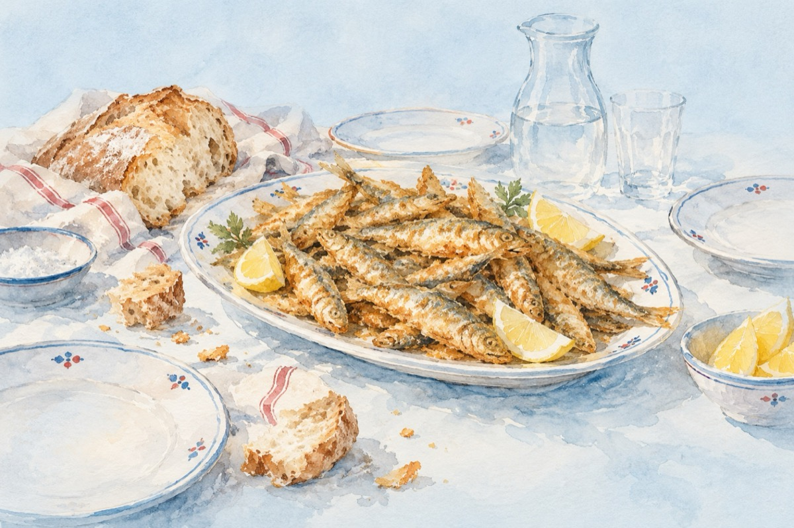

„Sentimente” la Galați
P.S. Ca informație utilă Pește a fost puțin pentru-o așa măsură!
Și nu c-a fost masa săracă
Și burțile sunând a gol
Dar gurile au început ca să se-ntreacă
Precum mașinile la semafor!
Când peștele sosit-a-n farfurie
Prăjit și bine rumenit
E bine c-acest lucru să se știe
Că toată „Agurida” l-a dorit!
Și cum Iisus cândva înfăptuia minuni
Cu pâinea și cu peștele de-atunci
Așa și la Galați ea, Loredana,
A dat pocnind din degete porunci!
Și peștele s-a răspândit la fiecare
Fără scandal sau îmbulzeală
Și părăsind mesenii-a lor mâncare
Au dat cu gurile pe peștișori năvală.
E necesar de stabilit
Că la minunea ce s-a petrecut
Aicea la „Galmondo”, unde-a fost prăjit
La nimeni vreun oscior n-a sta în gât!
Vasile Groza